About Me

I am a senior project lead based in Portland, Oregon. At my current position with Epiq Global, I lead programs that help individuals recover damages due to large-scale banking fraud while assisting banks and auditors to identify risks and potential areas of concern, as well as rebuilding my clients' brands and customer confidence in them. Since 2015, the projects I lead have helped and are helping more than two million individuals and businesses worldwide recover over $2 billion USD.
I believe that as designers, leaders, and consumers we have an obligation to produce work and consume products that uphold the highest standards of ethics, sustainability, efficiency, long-term utility, and quality. As everything we do consumes resources, our duty is to reduce these demands as much as possible and to produce the most value for the world from what we do consume. I hope that each day my work lives up to these standards.
Experience
Epiq Global
Senior Project Lead • 2018–Present
Project Lead • 2016–2018
Project Coordinator • 2015–2016
At Epiq Global, I lead multiple simultaneous projects to assist with recovery of damages related to large-scale, systematic banking fraud and other regulatory matters. Operating under intense regulatory and media scrutiny, these programs have successfully helped more than two million individuals and businesses recover over $2 billion USD, while assisting auditors with identifying patterns and potential additional areas of concern. These projects are among the most sophisticated the company handles, each project earning Epiq between $1 million and $10 million annually.
Key Achievements
- Service as key liaison to Fortune 25 clients and Big Four banks in banking and regulatory matters each exceeding $1 million in monthly revenue and together earning one quarter of division revenue.
- Leadership of a team of fourteen attorneys and project coordinators to simultaneously manage four of the company’s five largest projects, providing leadership, training, direction, and feedback.
- Establishment and tracking of project milestones to ensure timely completion of client deliverables.
- Identification potential risk factors and bottlenecks, providing guidance to client on risk avoidance and mitigation.
- Insurance of compliance with legal agreements, Federal Reserve Board Consent Orders, FINRA rulings, and CFPB orders.
- Collaboration with Agile development team on bi-weekly sprints, attendance of daily scrums, provision of business, functional, and technical requirements, review of wireframes and demos, and performance of UAT for client-facing software.
- Review and approval of monthly invoices and provision of regular updates on project deliverables to executive management.
- Successful collaboration with operational divisions to design custom processes and software and build teams of dedicated resources to serve high-value clients effectively and efficiently.
- Spearheaded training and process documentation programs to efficiently onboard project coordinators and attorneys.
- Personally developed software tools used by project team to administrate four high-value projects, providing a level of visibility, flexibility, and reportability unique within the division.
- Identified and implemented process improvements on a group of sensitive, high-labor processes, decreasing labor costs by 88% and cutting error rates by 90%.
- Developed monthly revenue forecasting software tools integrating statistical analyses of live project data to provide estimates more than four times as accurate as previously achievable.
Portland General Electric
Operations and Analytics Consultant • 2014–Present
Portland General Electric retains me as a consultant to assist with software solutions and data analysis for immediate needs that cannot be satisfied by internal teams. Key projects have included development of software tools to collect and parse arcane network performance data and aggregate this into readable reports, reducing labor for this reporting by 95%. Other projects have included advisement on methodologies for producing meaningful, actionable reporting based on available data, recommendations on best practices for research of non-communicative system nodes based on analysis of successful repair rates, and rapid-turnaround repair and support for preexisting scripts and other software tools.
Key Achievements
- Development of software packages in VBa, Python, and SQL for statistical analysis of systems performance and reliability data.
- Design and implementation of process improvements decreasing labor on reporting tasks by 95% and reducing errors by 75%.
- Rapid-turnaround development and updates of software and analytics tools to meet immediate needs that could not be accommodated by internal development and data teams.
- Collaboration with analysts and developers to design reporting and dashboards to continued efficient operation during ma-jor database and software system transition.
- Ensured reporting and processes were in full compliance with corporate policy and Public Utility Commission guidelines.
- Advisement of client on methodologies and best practices for performing meaningful analyses of available data, providing timely, actionable results and reporting for project teams and operational groups.
- Facilitated development of a library of technical documentation of above analytics tools and methodologies.
Portland State University
Graduate Teaching Assistant • 2012–2014
At Portland State University, I acted as an assistant instructor in a series of undergraduate history courses, mostly concentrating on World History and the history of the Middle East. I received the honor from the professors I worked with to offer frequent presentations on the history of the Middle East to students, where I developed a presentation style characterized by bold, graphic typography, meaningful use of animation, and rich, rapid-fire imagery. I also polished skills in providing positive, constructive feedback and critique of ideas, which continues to serve me well.
Key Achievements
- Presented weekly lectures for undergraduate classes of 60 to 80 students in world history, classical history, and the history of the Middle East. Polished skills in public speaking, instruction, and clear presentation of complex information.
- Held regular discussion and mentoring sessions among students, including constructive critique of writing and analysis skills and techniques.
- Graded assignments, papers, and essays and provided constructive feedback to students.
- Developed reporting methodologies to analyze grade trends across racial, gender, and socio-economic lines to identify po-tential biases in grading and evaluation, as well as core demographics that could be better reached.
- Named Portland State University’s Rockstar Graduate Teaching Assistant for Winter 2012 and Spring 2013.
Example Work
The below are examples of PowerPoint slides used for a lecture series I gave, showing the visual style and use of animation I developed as part of my work with Portland State.
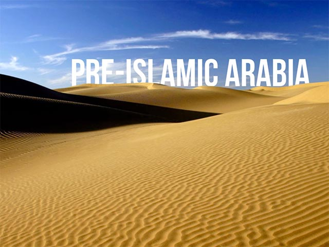 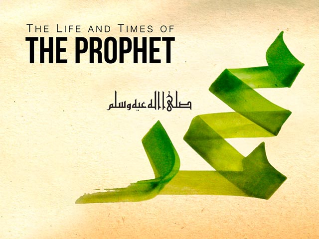 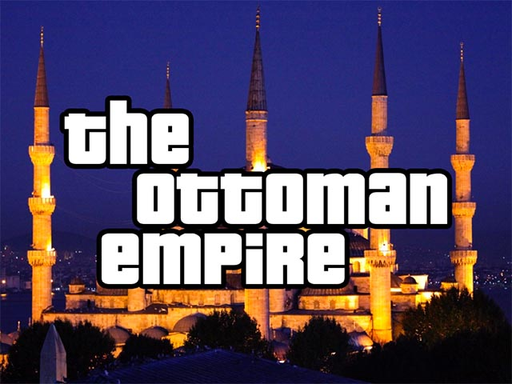The Green Car Company
Service Writer • 2006–2007
Before my college education, I had a career in the Seattle area in the automotive industry, culminating with a position at The Green Car Company, where I assisted clients with converting their vehicles to run on biodiesel or waste vegetable oil, back when these were yet nascent on the market. GCC was also a pioneer in the electric vehicle and city car industry, and I assisted in the process of importing European and Asian-market vehicles to meet these demands and ensuring they were adequately converted to meet US emissions and safety regulations.
Key Achievements
- Lead a team of four technicians and three auxiliary workers to manage and operate an auto sales and repair facility special-izing in hybrid, biodiesel, and electric vehicles.
- Distilled complex information from technicians into understandable language for clients, earning trust and buy-in from members of the savvy, informed Seattle market, assisting them with making educated purchasing and repair decisions.
- Achieved the largest service sale in company history: over $25,000 in a single transaction for custom design, fabrication, and installation work to convert a pair of vans to 100% biodiesel-compatible drivetrains.
- Spearheaded the company’s conversion from paper invoicing to a computerized invoicing, pricing, and inventory man-agement system.
- Lead the process of importing and converting a series of European and Asian-market vehicles to meet US safety and emis-sions regulations to answer demand in a unique and under-served segment of the automotive market.
Education
Portland State University
Master's of Arts, History / Architectural History (Unfinished) • 2012–2014
For graduate school, I elected to continue my work in architectural history, focusing upon the use of symbol and motif to communicate across linguistic and religio-cultural lines in the medieval Middle East, with additional focus upon the network of logistics and trade established that provided inspiration and materials which have profoundly influenced the architecture and material culture of the Middle East. Unfortunately, the outbreak of the Syrian civil war and severe damage to the structure that was to be the focus of my thesis has forced me to place further work on hold.
Example Work
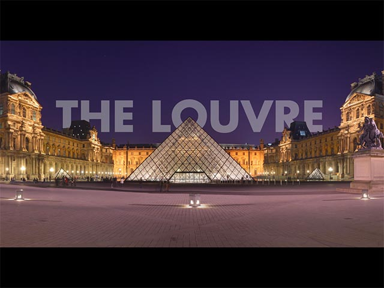![Title card from research presented during my Master's work, on the construction and architecture of L'Hopital Saint-Louis during the reign of Henri IV. L'Hopital Saint-Louis is a very early example of what would be today recognizable as a hospital, with a concentration on cleanliness and deliberately positioned away from the body of Paris to keep the ill sequestered. As you can observe from the treatment of the background photograph, this was made during the peak of the heavy Instagram filter trend.](work/psu_ma_02_thumb.jpg)
![Animated title card from research presented during my Master's work, on the population pressures and attempts at solutions in 21st-century Istanbul, including discussion of underprivileged groups who have been ignored or deliberately harmed by rapid development. This title card was produced by disassembling the photograph into a number of layers. Text perspective, extrusion, and reflection layers were produced by determining the vanishing points in the photograph with CAD. Multiple text layers to simulate lighting and reflection were produced in Photoshop and animated in Keynote.](work/psu_ma_03_thumb.jpg) 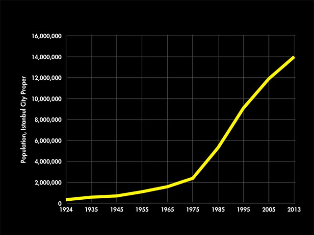
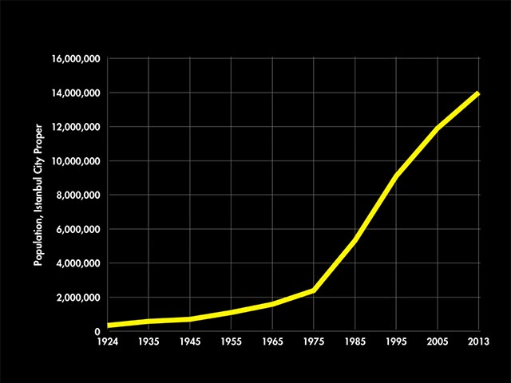
Portland State University
Bachelor's of Science, History / Architectural History • 2010–2012
Minor, Architecture • 2008–2010
Additional Study, Civil Engineering • 2007–2009
When I left the automotive industry, I knew I was excited about design and manufacturing, but did not have a clear direction. I decided to build my own bachelor's degree by studying design from three angles: civil engineering, architecture, and architectural history. I was honored to have work I produced in all three disciplines preserved in Portland State's archive as future teaching materials, as well as a number of designs used by the School of Architecture to present to the National Architectural Accrediting Board in their successful arguments for accreditation.
Example Work
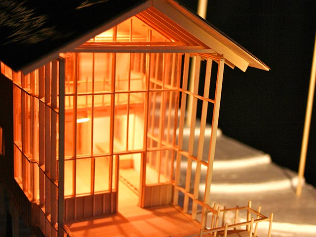 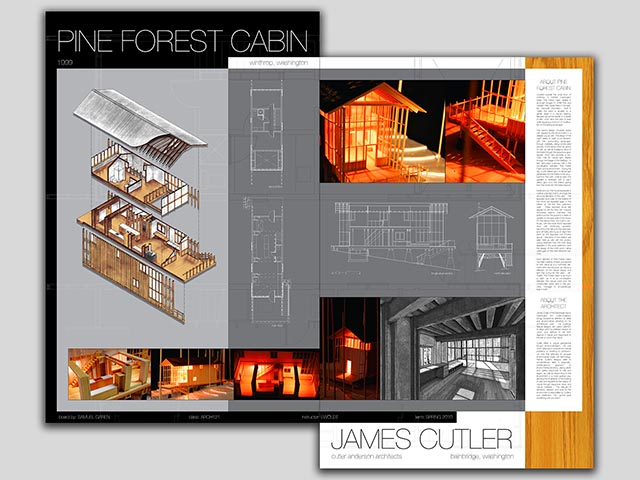
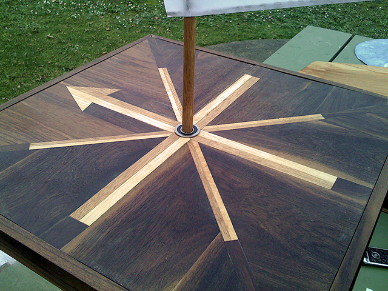
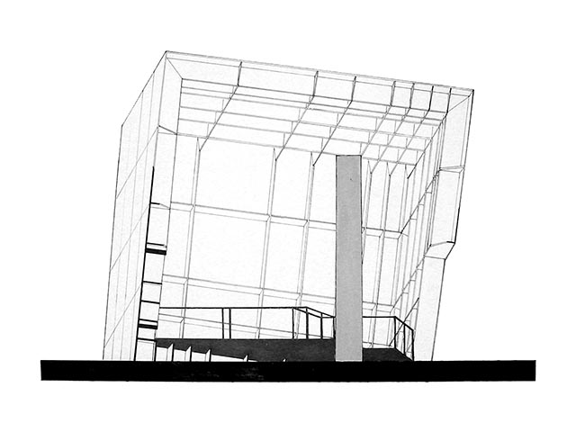
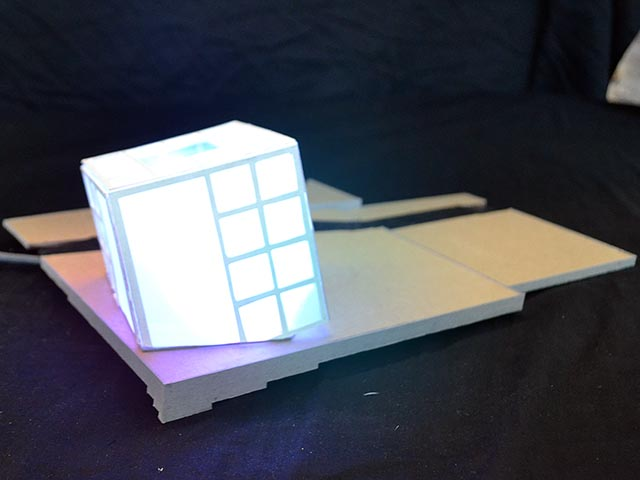
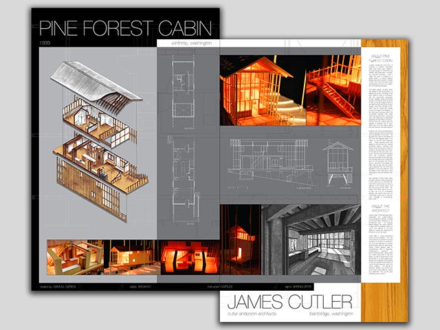
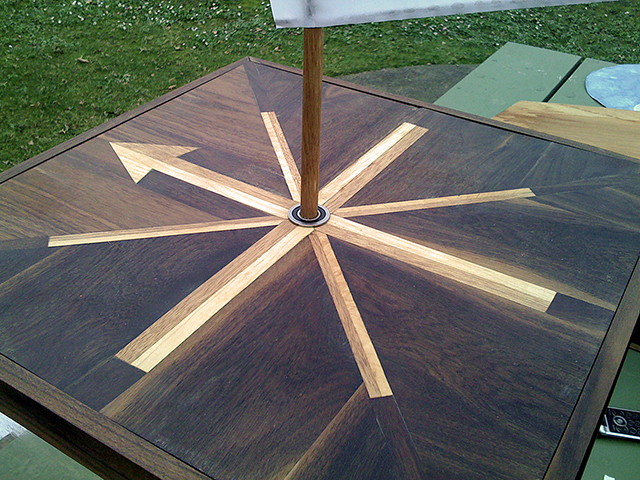
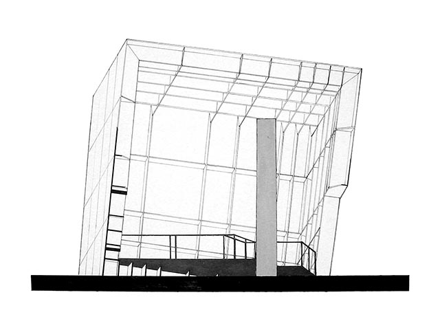
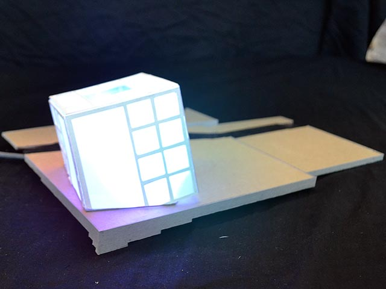
Personal Work
I love the act of designing and creating and have taught myself mechanical skills, woodworking, and metal fabrication, as well as CAD, some graphic design skills, and programming in Python and VBa to support my personal interests. Displayed below are a few things I have made or helped make.
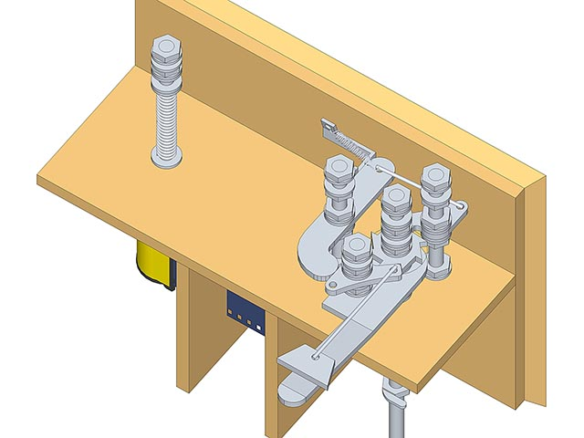 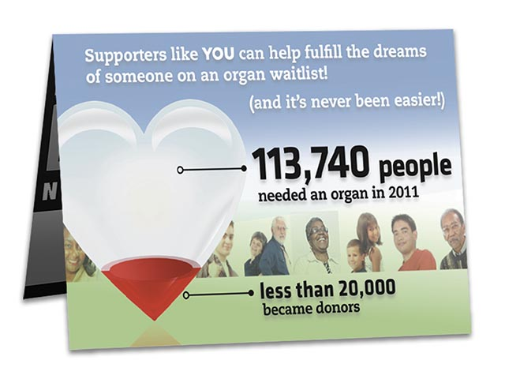
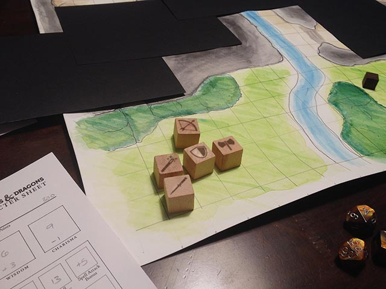
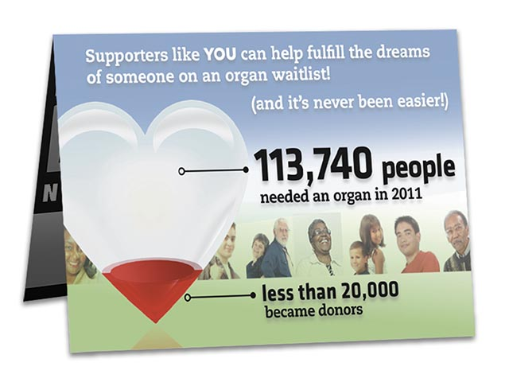
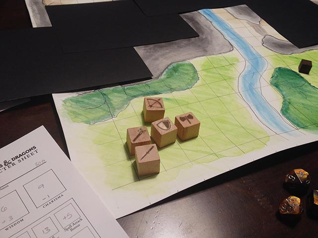